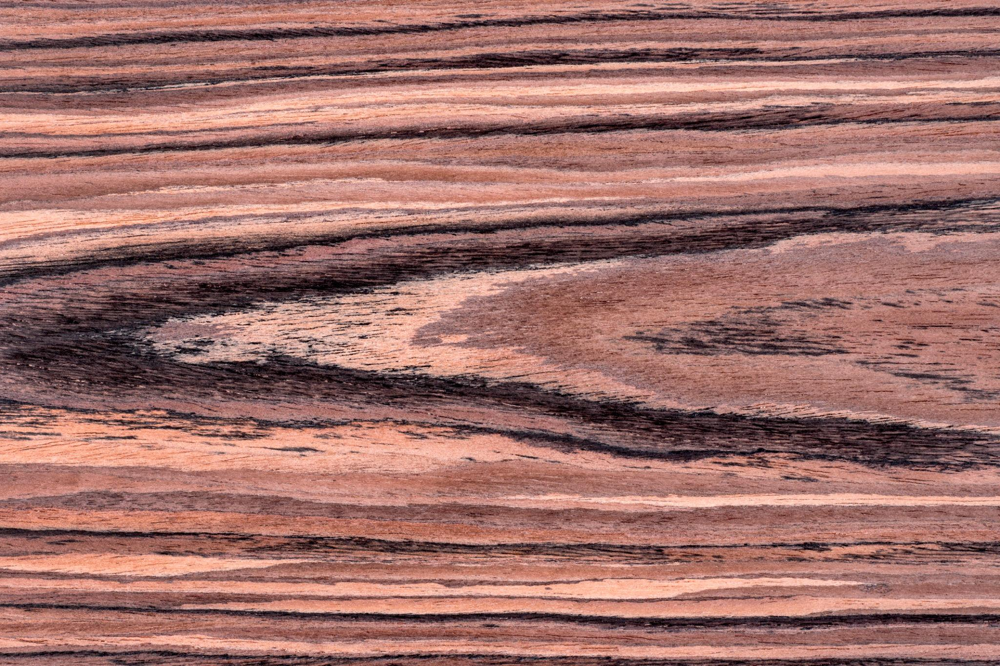
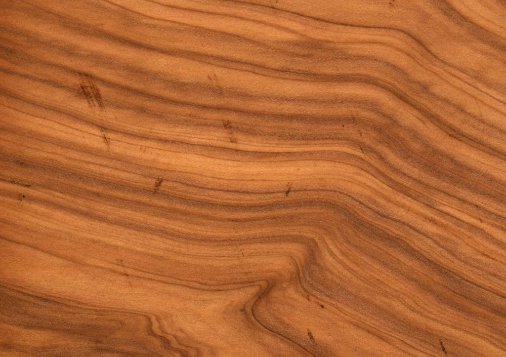
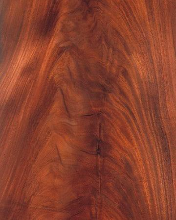
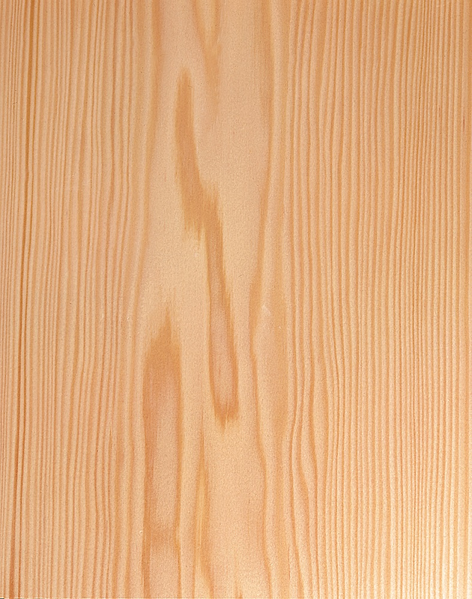
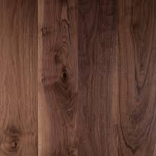

Cada instrumento nace de un proceso artesanal donde materiales, calibración y detalle definen un sonido imposible de replicar.
En una era dominada por la replicación industrial y la inmediatez, nosotros elegimos el ritmo del árbol. Vivimos con una obsesión milimétrica, entendiendo que una décima de milímetro define el alma acústica de un instrumento.
Trabajamos exclusivamente con maderas nobles curadas, seleccionadas pieza por pieza. Aquí no aprendes a ensamblar; aprendes a escuchar la arquitectura orgánica del material.





Un viaje inmersivo desde el bloque maderero en bruto hasta el lustre final de una obra de arte acústica o eléctrica.
Domina las microinteracciones entre cejuela, trastes, alma y puente para lograr una afonía perfecta y un confort de toque insuperable.
No. El programa está diseñado para guiarte desde la correcta sujeción de las herramientas manuales básicas hasta los cortes más sofisticados de la física acústica.
Sí. Cada estudiante recibe un juego premium de maderas macizas (Picea, Arce o Caoba según proyecto) estacionadas por más de 5 años.
Por supuesto. El instrumento es el examen final de tu proceso formativo. Te lo llevas calibrado, lustrado y listo para conciertos o grabaciones.
Para asegurar una tutoría uno a uno donde el maestro sigue de cerca cada milímetro de tu corte, limitamos de forma estricta las admisiones.
Déjanos tus credenciales. Un luthier analizará tu intención formativa y te contactará en un plazo máximo de 48 horas.